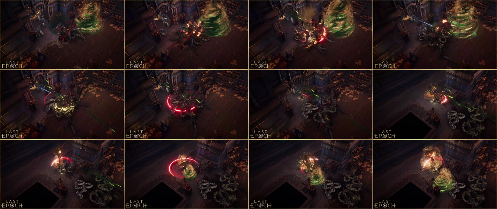
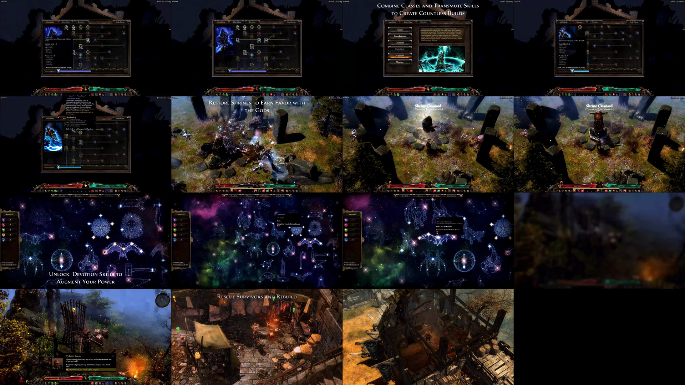

These are source-game media, not Godot replicas. Neither qualifies the required ordinary quiet/combat segment.
Identified as Rive in binding source; build unverified. Promotional overlay, missing ordinary HUD and a cut.

HUD and shrine/town interactions visible. Menus, captions and cuts exclude this excerpt from ordinary framing measurements.
